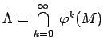

Inhalt Index DeskTop Bronstein

 Dynamische Systeme und Chaos Quantitative Beschreibung von Attraktoren Dimensionen Beispiele von Attraktoren
Dynamische Systeme und Chaos Quantitative Beschreibung von Attraktoren Dimensionen Beispiele von Attraktoren


Die Hufeisen-Abbildung tritt in Verbindung mit POINCARÉ-Abbildungen auf, die transversale Schnitte von stabilen und instabilen Mannigfaltigkeiten beinhalten.
Das Einheitsquadrat M =[ 0,1] x [0,1] wird zunächst in einer Koordinatenrichtung linear gestreckt und in der anderen Richtung gestaucht. Anschließend wird das erhaltene Rechteck in der Mitte gebogen (s. Abbildung).
Wiederholt man diese Prozedur ständig, so entsteht eine Folge von Mengen , für die  eine kompakte unter  invariante Menge darstellt, die alle Punkte aus M anzieht.
invariante Menge darstellt, die alle Punkte aus M anzieht.
Mit Ausnahme eines Punktes läßt sich  lokal als Produkt ,,Linie x CANTOR-Menge`` beschreiben.
lokal als Produkt ,,Linie x CANTOR-Menge`` beschreiben.